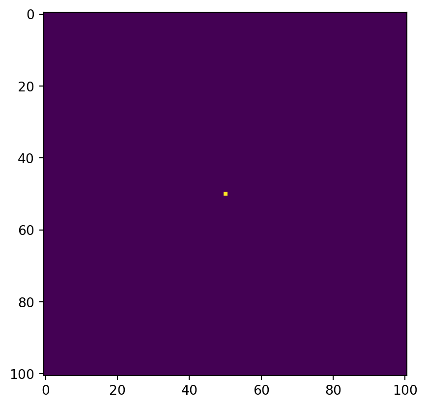
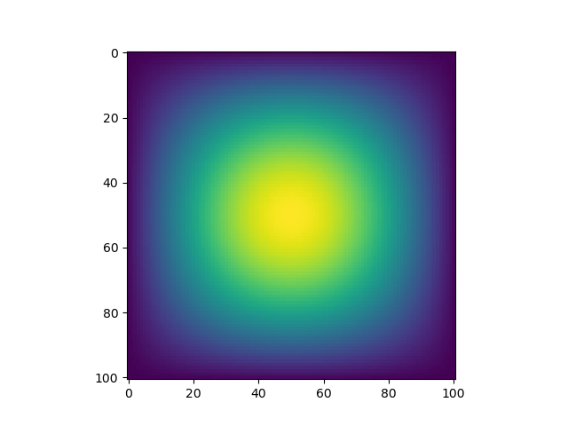
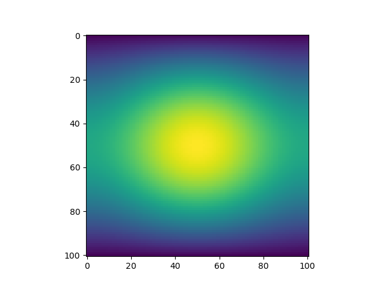

N = 101
epsilon = 0.2In this blog assignment, you will conduct a simulation of two-dimensional heat diffusion in various ways.
In the lecture notes, we represented the steps to simulate one-dimensional heat diffusion as a sequence of matrix-vector multiplications. Let’s expand it to two dimensions.
In two-dimensions, the heat equation reads: \[\frac{\partial f(x, t)}{\partial t} = \frac{\partial^2 f}{\partial x^2 } + \frac{\partial^2 f}{\partial y^2 }\;.\] Using a similar discretization scheme as in the one-dimensional case, let’s put: \[ x_i = i \Delta x,\;\; y_j = j \Delta y,\;\; t_k = k \Delta t, \] for \(i = 0, \cdots, N-1\); \(j = 0, \cdots, N-1\); and \(k = 0, 1, 2 \cdots\).
When we define \(u_{i, j}^k = f(x_i, y_j, t_k)\), the update equation in discrete time can be represented as: \[ u_{i, j}^{k+1} \approx u_{i, j}^k + \epsilon \left(u_{i+1, j}^k + u_{i-1, j}^k + u_{i, j+1}^k + u_{i, j-1}^k - 4 u_{i, j}^k\right), \] where \(\epsilon\) is a small parameter. The boundary condition can be constructed to allow heat to escape, as follows: \[ u_{-1, j}^k = u_{N, j}^k = u_{i, -1}^k = u_{i, N}^k = 0. \] We are not explicitly allocating space for \(u_{-1, j}^k\), \(u_{N, j}^k\), \(u_{i, -1}^k\), or \(u_{i, N}^k\).
For this homework, we will use:
and we will use a similar initial condition as in the 1D case: putting 1 unit of heat at the midpoint.
import numpy as np
from matplotlib import pyplot as plt
# construct initial condition: 1 unit of heat at midpoint.
u0 = np.zeros((N, N))
u0[int(N/2), int(N/2)] = 1.0
plt.imshow(u0)<matplotlib.image.AxesImage at 0x12820e0d0>
1. With matrix multiplication
As in the linear algebra lecture, construct the matrix A so that the second term of the update equation is equivalent to a matrix-vector multiplication, where the vector is created by flattening the current solution \(u_{i, j}^k\). Each iteration of the update is:
u = u + epsilon * (A @ u.flatten()).reshape((N, N))That is, we view \(u_{i, j}^k\) as the element with index \(N \times i + j\) in a vector of length \(N^2\). You must strictly follow the indexing used in the update equation above. The matrix A has the size of \(N^2 \times N^2\), without all-zero rows or all-zero columns.
Hint. The matrix is pentadiagonal — only five diagonals contain nonzero values: the main diagonal, the first upper and lower diagonal, and the \(N\)-th upper and lower diagonal. Don’t forget to add some zeros to the first upper and lower diagonal, as only \(N(N-1)\) of values on those diagonals are nonzero.
Run the code for 2700 iterations. How long does it take? Visualize the diffusion of heat every 300 iterations. Since our grading is PDF-based, please use a 3x3 grid of 2D heatmaps or contour plots. You are welcome to create an animation later. Since we want to compare computation time between multiple methods, we should not count the time needed for visualization. Thus, it is recommended to store the intermediate solutions in a separate array.
At the end of the run, your solution should be symmetric and invariant under 90-degree rotations. It should look like:

but not like:

2. Sparse matrix
In fact, the performance of Part 1 is supposed to be excruciatingly slow. While we can use the underlying optimized matrix multiplication routine from BLAS (basic linear algebra subprograms), it is not particularly effective here, as the matrix A has less than \(5N^2\) nonzero elements out of \(N^4\) elements. Most of operations are wasted for computing zeros. Let’s use the data structure that exploits a lot of zeros in the matrix A: sparse matrix data structures. The scipy package holds useful sparse matrices. Since we know that the matrix A is pentadiagonal, we can use dia_matrix to only use \(O(N^2)\) space for the matrix, and only take \(O(N^2)\) time for each update.
Let’s define A_dia_matrix as the matrix A in a sparse format and repeat Part 1.
Run the code for 2700 iterations. How long does it take? Visualize the diffusion of heat every 300 iterations.
3. With numba
Now, let’s use numba to solve the same problem, explicitly writing a nested for-loop, rather than a matrix multiplication. We will accelerate the function with @jit. As in the previous sections, the for loop should go through every values in range(N), and do some floating-point operations for every index.
Run the code for 2700 iterations. How long does it take? It is a good idea to first run it for a small number of iterations to get it compiled, and then run it again with the full 2700 iterations to get high performance with precompiled code. It is possible to make it faster than Part 2, excluding the compilation time. Visualize the diffusion of heat every 300 iterations.
4. Comparison
Compare the implementation and performances of the three methods. Which one is the fastest? Which one was easier for you to write?
Specifications
Please remember that you must meet all specifications in order to receive credit on the first submission!
Format
- As always, please submit the PDF printout of your blog post and any code you wrote.
Coding Problem
Part 1
- The matrix
Ais constructed correctly.
- The matrix
Ahas the size of \(N^2 \times N^2\), without all-zero rows or all-zero columns.
- The visualized solution appears correct – the solution should be symmetric, invariant under a 90-degree rotation.
- The time elapsed is shown.
- You must use the same indexing as given in the update equation.
Part 2
- The sparse matrix
A_dia_matrixis constructed correctly. - The time elapsed is shown.
- It should be at least 100x faster than Part 1.
- The visualized solution appears correct.
- You must use the same indexing as given in the update equation.
Part 3
- The for loop is constructed correctly.
- It must go through all the indexes, every values in
range(N), and do some floating-point operation for every index.
@jitis used for just-in-time compilation.- It should be at least 100x faster than Part 1.
- The visualized solution appears correct.
- You must use the same indexing as given in the update equation.
Part 4
- The three implementations and their performances are compared.
Style and Documentation
- Code throughout is written using minimal repetition and clean style.
- Please make sure to include useful comments and detailed explanations for each of your code blocks.
- Any repeated operations should be enclosed in functions, regardless of whether they are explicitly required in the instructions.
Writing
- The blog post is written in tutorial format, in engaging and clear English. Grammar and spelling errors are acceptable within reason.